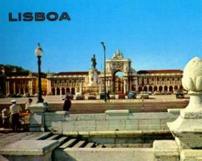
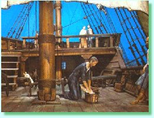
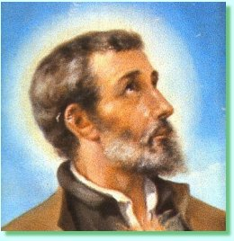
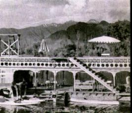

Chegaram a Lisboa no dia 23 de Junho
de 1540. O Rei queria que os dois prelados ficassem hospedados em seu Palácio
e comessem das refeições em sua 
As Santas Missas que celebravam começaram a atrair o povo, porque eram celebrações realizadas com muito amor. As pregações eram diretas, objetivas e bem preparadas, uma mensagem para a vida extraída do evangelho de cada dia. E não eram longas, não ultrapassavam 15 minutos. A freqüência a Igreja aumentou de modo considerável, diariamente estava cheia de gente, nos confessionários, na oração do Terço e durante a Santa Missa. O povo estava eufórico e não queria deixa-los sair de Lisboa. Por essa razão, os planos foram alterados e Dom João, o Rei Missionário, fez um acordo com Ignácio de Loyola: Xavier seguiria para a Missão na Índia e Simón permaneceria em Lisboa para atender a Comunidade cristã.
Em Agosto de 1540 Sua Santidade o Papa Paulo III promulgou quatro (4) “Breves†(Bula Papal) em favor de Xavier, para dar-lhe autoridade e poder, a fim de atuar na Missão com liberdade:
1ª Breve – Designando-o “Núncio in Omnibas Portugaliae Conquistis ultra et citra Caput Bonnue Speiâ€.
2ª Breve – Concedendo-lhe "amplos poderes para estabelecer e manter a Fé no Oriente".
3ª Breve – Recomendando-o a David, Imperador da Etiópia."
4ª Breve – Recomendando-o aos Príncipes e Soberanos da África Oriental, das regiões do Mar Vermelho, do Golfo Pérsico e das Índias (aquém e além do Rio Ganges).
A CAMINHO DA ÁFRICA
Com muitas lágrimas do povo, no dia 7 de Abril de 1541, Francisco Xavier com dois companheiros: Padre Paulo Camerini e Irmão Francisco Mansilhas, zarparam para a Índia. Outros quatro navios completavam a frota. Num barco viajava o governador da Índia Dom Martín Afonso de Souza e além da tripulação havia nos navios muitas outras pessoas: passageiros, soldados, escravos e convertidos. Gente de todas as classes sociais e de gênios totalmente diferentes. De modo que Xavier desde o início, teve que combater a blasfêmia, o jogo e outras desordens, ao mesmo tempo em que procurava catequizar todos eles. Aos domingos pregava o Evangelho ao lado do mastro maior da nave. Transformou o seu camarote em enfermaria e cuidava dos enfermos, apesar dele também ter sofrido muito durante a viajem com enjôo, por causa do balanço do barco. Usavam sangrar, ou seja, tirar o sangue, para acalmar o enjôo. Ao longo da viagem tiveram que sangra-lo por sete vezes. Mesmo assim, Xavier não revelava desânimo e atendia aos enfermos, ensinava e pregava o Evangelho, confessava as pessoas, os doentes e sadios. Todavia para agravar o trabalho dos missionários, ocorreu a bordo uma epidemia de escorbuto e somente eles é que estavam preparados para cuidar dos enfermos dispensando os cuidados e as providências necessárias. Dessa forma, o trabalho aumentou consideravelmente.
Ao se aproximarem do circulo do equador, o calor aumentou e a água doce apodreceu. Mais pessoas ficaram doentes. Xavier se desdobrava, até lavava as roupas dos doentes. A água para ser utilizada tinha que ser fervida. Durante a noite, ele se recostava na parede do quarto, próximo aos enfermos e lhes dava continua assistência. Confessava os moribundos com pesar e tristeza, porque tinha presente em sua mente as cenas que normalmente aconteciam no último ritual. Aqueles que morriam, os cadáveres eram lançados ao mar e comidos pelos tubarões. Ele presenciou esta realidade muitas vezes.
Pararam cerca de 40 dias no Golfo da Guiné.
A calmaria era grande e não impulsionava as velas das embarcações. Surgiu peste
a bordo e Xavier também foi 
:
NA ÍNDIA

Xavier chegou em Goa no dia 6 de Maio de 1542. Se por um lado o progresso e a beleza da cidade eram visíveis, a educação do povo estava relegada a um plano inferior. Lá viviam muitos funcionários portugueses, mercadores, soldados e aventureiros, unidos à civilização muçulmana e hindu. A mistura daquelas diferentes raças, num ambiente em que predominava o paganismo e a sensualidade, aliada a uma acirrada disputa comercial, escassez de sacerdotes e outros fatores negativos, levou o povo a relaxar com a fé e os bons costumes. Muitos portugueses foram atraídos pela ambição, usura e os vícios. Não cultivavam os Sacramentos e só usavam o Rosário para contar o número de açoites que mandavam dar aos escravos infratores. A conduta escandalosa dos cristãos neutralizava a fé que deviam cultivar e servia de mal exemplo para os infiéis. Nos arredores de Goa ainda existia mais anormalidade, só haviam quatro pregadores e nenhum deles era sacerdote. Xavier encarou a realidade com disposição. Começou pela Catequese, instruiu devidamente os portugueses e os hindus, iniciando pelos princípios básicos da religião, incutindo nos jovens o valor da fé e a prática das virtudes. Aos domingos além de celebrar a Santa Missa, pregava aos cristãos e hindus, e também, visitava as famílias em suas casas. Raras eram as mulheres portuguesas que viajam para Goa. Os homens não se casavam, viviam amasiados com as mulheres de lá. A cidade era uma verdadeira Babilônia...
Xavier visitou o Bispo local D. João de Albuquerque e lhe mostrou as Bulas do Papa, que o nomeava Delegado Papal com plenos poderes. Contudo, humildemente disse ao senhor Bispo que só usaria aquelas prerrogativas especiais, com a permissão dele. O Bispo apreciou o seu gesto e se tornaram grandes amigos.
Era o mês que fazia mais calor durante
o ano, quando Xavier começou o seu apostolado. Vivia no Hospital, atendendo
e confessando os enfermos. Dormia numa esteira, sempre junto dos doentes que
estavam em situação mais grave. No período da tarde visitava as prisões e os cárceres,
dando assistência àqueles homens, tentando reintegra-los a sociedade. Aos domingos
atendia os leprosos. Numa cabana próxima ao Hospital reunia as crianças e lhes ensinava
as Orações, Cânticos, os Mandamentos e os fundamentos do Cristianismo. Em 
Durante cinco meses permaneceu em Goa
e em tão pouco tempo a transformou. Foram abertas Escolas, formou Equipes de Catequese,
incrementou a prática dos Sacramentos e o cristianismo cresceu em todos os corações: os
Mandamentos eram respeitados e o povo dedicava-se as orações. Seu jeito amável
e caridoso com o próximo, possibilitou que ele conquistasse muitas almas para o SENHOR.
E sempre estava inovando para alcançar êxito em seus projetos. Foi assim que criou um
modo fácil de instruir, colocando as Verdades do Cristianismo como letra de uma música
popular. O método teve tal êxito que pouco tempo depois se cantavam as canções que
ele havia composto, nas ruas, nas casas, nos campos e no trabalho.
Xavier fez de Goa o seu quartel general. De lá viajava para catequizar e levar o amor
de DEUS a todos os lugares, mas sempre voltava para dar assistência espiritual aos
necessitados, dar ordens de serviço aos membros da missão e repartir os seus
missionários enviando-os em todas as direções. Aceitou instalar o Seminário de São
Paulo, quando Ignácio de Loyola lhe enviou missionários para administra-lo.
Este Seminário que trabalhou na formação do clero indígena, teve enorme
influência na evangelização do Império Português do Oriente.